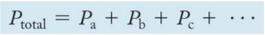

Week 16 - Day 2
Final exam
- Next Monday
- Normal location
- 9:30 - 11:00
- Pencil
- Photo ID
- Calculator
- More weighted on new chapters
- 50 questions
- Review sessions saturday and sunday 2:00
- Room 1004 Shelby Hall
Clicker 1
- Audio 0:02:08.744030
- What is the partial pressure of oxygen in a mixture that contains 0.30 mol of O2, 0.70 mol of N2, and 0.25 mol of Ar with
Clicker 2
- Audio 0:05:23.466658
- A 0.334 g sample of an unknown halogen occupies 109 mL at 398 K and 1.41 atm. What is the identity of the halogen? Br:79.90
Daltonʼs Law of Partial Pressures
- Audio 0:12:15.535453
- For a multicomponent gas mixture, we calculate the partial pressure of each component from the ideal gas law and the number of moles of that component (nn) as follows:
- The sum of the partial pressures of the components in a gas mixture equals the total pressure:
- 

Daltonʼs Law of Partial Pressures
- This relationship is known as Daltonʼs law of partial pressures.
Mole Fraction: χa
- Audio 0:13:15.434990
- The number of moles of a component in a mixture divided by the total number of moles in the mixture is the mole fraction.
- The ratio of the partial pressure a single gas contributes and total pressure is equal to the mole fraction.
Mole Fraction
- Audio 0:14:01.065205
- For gases, the mole fraction of a component is equivalent to its percent by volume divided by 100%.
– Nitrogen has a 78% composition of air. Find its partial pressure.
Practice Problem: Total Pressure and Partial Pressures
- Audio 0:14:37.896502
- A 1.00 L mixture of helium, neon, and argon has a total pressure of 662 mmHg at 298 K. If the partial pressure of He is 341 mmHg and that of Ne is 112 mmHg, what mass of Ar is present?
Deep-Sea Diving, the Bends, and Partial Pressures
- Audio 0:18:06.803368
Deep-Sea Diving and Partial Pressures
- Audio 0:22:33.181580
- When a diver breathes compressed air, the abnormally high partial pressure of oxygen in the lungs leads to an elevated concentration of oxygen in body tissues.
Collecting Gases
- Audio 0:22:51.487861
- Gases are often collected by having them displace water from a container. – The problem is that because water evaporates, there is also water vapor in the collected gas.
- The partial pressure of the water vapor, called the vapor pressure, depends only on the temperature.
– A table can be used to find the partial pressure of the water vapor when collecting a gas over water.
– Example:
- A gas sample is collected over water. The gas sample has a total pressure of 758.2 mmHg at 25 °C.
- From a vapor pressure of water table, the partial pressure of the water vapor is 23.78 mmHg at 25 oC.
- The partial pressure of the dry gas will be 734.4 mmHg.
Vapor Pressure of Water
Kinetic Molecular Theory
- Audio 0:25:29.060382
- The simplest model for the behavior of gases is the kinetic molecular theory.
- In this theory, a gas is modeled as a collection of particles (either molecules or atoms, depending on the gas) in constant motion.
Kinetic Molecular Theory Postulates
- The particles of the gas (either atoms or molecules) are constantly moving.
- The attraction between particles are neglected.
- When the moving gas particles hit another gas particle or the container, they do not stick; they bounce off and continue moving in another direction.
- There is a lot of empty space between the gas particles compared to the size of the particles.
Kinetic Molecular Theory
Kinetic Molecular Theory
- The collision of one particle with another (or with the walls of its container) is completely elastic.
– This means that when two particles collide, they may exchange energy, but there is no overall loss of energy.
- Any kinetic energy lost by one particle is completely gained by the other.
- The average kinetic energy of the gas particles is directly proportional to the Kelvin temperature.
– As you raise the temperature of the gas, the average speed of the particles increases.
- But not all the gas particles are moving at the same speed!
The Nature of Pressure
- Because the gas particles are constantly moving, they strike the sides of the container with a force.
- The result of many particles in a gas sample exerting forces on the surfaces around them is a constant pressure.
- Pressure (P) = Force (F)/Area (A)
Gas Laws Explain Boyleʼs Law
- Boyleʼs law says that the volume of a gas is inversely proportional to the pressure. – Decreasing the volume forces the molecules into a smaller space.
- More molecules will collide with the container at any one instant, increasing the pressure.
Gas Laws Explain Charlesʼs Law
- Charlesʼs law says that the volume of a gas is directly proportional to the absolute temperature. – According to kinetic molecular theory, when we increase the temperature of a gas, the average speed—and thus the average kinetic energy—of the particles increases.
- The greater volume spreads the collisions out over a greater surface area, so that the pressure is unchanged.
Gas Laws Explain Avogadroʼs Law
- Audio 0:27:49.912122
- Avogadroʼs law says that the volume of a gas is directly proportional to the number of gas molecules.
- Increasing the number of gas molecules causes more of them to hit the wall at the same time.
- To keep the pressure constant, the volume must then increase.
Gas Laws Explain Daltonʼs Law
- Audio 0:28:02.848774
- Daltonʼs law says that the total pressure of a gas mixture is the sum of the partial pressures.
- According to kinetic molecular theory, the particles have negligible size and they do not interact. – Particles of different masses have the same average kinetic energy at a given temperature.
- Because the average kinetic energy is the same, the total pressure of the collisions is the same.
Temperature and Molecular Velocities
Molecular Speed versus Molar Mass
- Audio 0:33:13.886790 • To have the same average kinetic energy, heavier molecules must have a slower average speed.
Temperature versus Molecular Speed
- Audio 0:33:55.441736 • As the temperature of a gas sample increases, the velocity distribution of the molecules shifts toward higher velocity. – The distribution function “spreads out,” resulting in more molecules with faster speeds.
Mean Free Path
- Audio 0:34:47.342762
- Molecules in a gas travel in straight lines until they collide with another molecule or the container.
- The average distance a molecule travels between collisions is called the mean free path.
- Mean free path decreases as the pressure increases.
Diffusion
- Audio 0:35:31.009397
- The process of a collection of molecules spreading out from high concentration to low concentration is called diffusion.
Diffusion and Effusion
- Audio 0:36:50.045677
- The process by which a collection of molecules escapes through a small hole into a vacuum is called effusion.
- The rates of diffusion and effusion of a gas are both related to the root mean square (rms) velocity of the gas particles.
- For gases at the same temperature, this means that the rate of gas movement is inversely proportional to the square root of its molar mass.
Grahamʼs Law of Effusion
- The ratio of the rates of effusion of two different gases at the same temperature is given by the following equation:
Clicker 3
- Audio 0:39:33.577535
- The rate of effusion of oxygen
Vocab
| Term | Definition |
|---|---|
| mole fraction | number of moles of a component in a mixture divided by the total number of moles in the mixture |
| vapor pressure | partial pressure of water vapor |
| kinetic molecular theory | model of gas behavior in which gas is modeled as a collection of particles (simplest model) |
| mean free path | average distance a molecule travels between collisions |
| diffusion | process of a collection of molecules spreading out from high concentration to low concentration |
| effusion | process by which a collection of molecules escapes through a small hole into a vacuum |